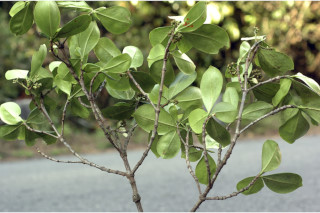
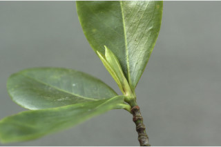
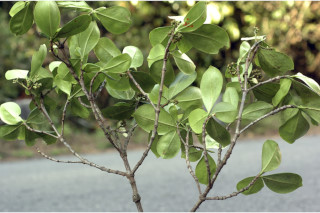
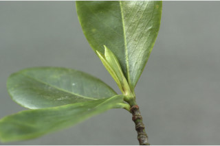
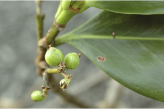
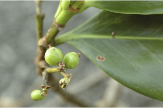
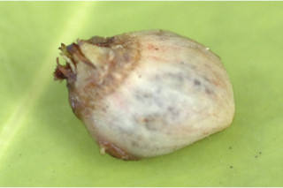
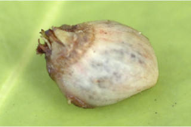

Trees up to 25 m tall.
25 ಮೀ. ಎತ್ತರದವರೆಗಿನ ಮರಗಳು.
Trees up to 25 m tall.
மரங்கள் 25 மீ. உயரம் வரை வளரக்கூடியது.
Branches usually horizontal; sometimes with fleshy adventiuous roots on trunk; bark grey, smooth when young, later with large and corky lenticels; blaze brownish.
ಕವಲುಗಳು ಸಾಮಾನ್ಯವಾಗಿ ಕಾಂಡದ ಲಂಬ ರೇಖೆಗೆ ಸಮಕೋನದಲ್ಲಿರುತ್ತವೆ;ಕೆಲವು ವೇಳೆ ಕಾಂಡದ ಮೇಲೆ ಮಾಂಸಲವಾದ ಅಪಸ್ಥಾನಿಕ ಬೇರುಗಳಿರುತ್ತವೆ;ತೊಗಟೆ ಎಳೆಯದಾಗಿದ್ದಾಗ ಬೂದು ಬಣ್ಣದಲ್ಲಿದ್ದು ನಂತರ ದೊಡ್ಡ ಗಾತ್ರದ ಮತ್ತು ವಾಯುವಿನಿಮಯ ಬೆಂಡು ರೂಪದ ರಂಧ್ರಗಳ ಸಮೇತವಿರುತ್ತದೆ;ಕಚ್ಚು ಮಾಡಿದ ಜಾಗ ಕಂದು ಬಣ್ಣದ ಛಾಯೆಯಲ್ಲಿರುತ್ತದೆ.
Branches usually horizontal; sometimes with fleshy adventiuous roots on trunk; bark grey, smooth when young, later with large and corky lenticels; blaze brownish.
கிளைகள் பொரும்பாலும் நிலத்திற்கு கிடைமட்டமானவை; சிலசமயங்களில் சதைப்பற்றான உன்று வேர்கள் மரத்தின் நடுத்தண்டிலிருந்து தோன்றுகிறது; இளம்பருவத்தில் மரத்தின் பட்டை சாம்பல் நிறமானது, வழவழப்பானது, முதிரும் போது பெரிய லெண்டிசெல் உடையது; உள்பட்டை ப்ரவுன் நிறமான
Ultimate branchlets slightly angular, glabrous, corky lenticellate.
ಅಂತಿಮ ಕಿರುಕೊಂಬೆಗಳು ಕೊಂಚ ಮಟ್ಟಿಗೆ ಕೋನಯುಕ್ತವಾಗಿರುತ್ತವೆ, ರೋಮರಹಿತವಾಗಿರುತ್ತವೆ , ಬೆಂಡುಯುಕ್ತ ವಾಯುವಿನಿಮಯ ರಂಧ್ರಗಳ ಸಮೇತವಿರುತ್ತವೆ
Ultimate branchlets slightly angular, glabrous, corky lenticellate.
சிறியநுனிக்கிளைகள் குறுக்குவெட்டுத் தோற்றத்தில் சிறிது கோணங்களுடையது, உரோமங்களற்றது, பெரிய பட்டைத்துளைகள் (லெண்டிசெல்லேட்) உடையது.
Leaves simple, opposite, decussate; stipules interpetiolar, caducous and leaving scar; petiole 0.3-0.5 cm long, planoconvex in cross section, glabrous; lamina 7-10 (-12.6) x 4-6.5 cm wide obovate or wide elliptic, apex acute to obtuse, base cuneate, margin entire and revolute, coriaceous, glabrous beneath, drying brown; midrib canaliculate above; secondary_nerves 6-10 pairs; tertiary_nerves obscure.
ಎಲೆಗಳು ಸರಳವಾಗಿದ್ದು ಕತ್ತರಿಯಾಕಾರದ ಅಭಿಮುಖ ಜೋಡನಾ ವ್ಯವಸ್ಥೆಯಲ್ಲಿರುತ್ತವೆ; ಕಾವಿನೆಲೆಗಳು ತೊಟ್ಟುಗಳ ನಡುವೆ ಇರುತ್ತವೆ,ಉದುರಿದ ನಂತರ ಗುರುತುಗಳನ್ನು ಉಳಿಸುತ್ತವೆ; ತೊಟ್ಟು 0.3-0.5 ಸೆಂ.ಮೀ.ವರೆಗಿನ ಉದ್ದವಿದ್ದು,ಅಡ್ಡ ಸೀಳಿದಾಗ ಸಪಾಟ ಪೀನ ಮಧ್ಯದ ಆಕಾರವನ್ನು ಹೊಂದಿದ್ದು ರೋಮರಹಿತವಾಗಿರುತ್ತವೆ; ಪತ್ರಗಳು7 -10(12.6) X 4–6.5 ಸೆಂ.ಮೀ. ಗಾತ್ರ, ವಿಶಾಲ ಬುಗುರಿ ಅಥವಾ ವಿಶಾಲ ಅಂಡವೃತ್ತದ ಆಕಾರ ಹೊಂದಿದ್ದು, ಚೂಪಾದ ಅಥವಾ ಚೂಪಲ್ಲದ ಮಾದರಿಯ ತುದಿ, ಬೆಣೆಯಾಕಾರದ ಬುಡ, ನಯವಾದ ಮತ್ತು ಹಿಂಚಾಚಿದ ಅಂಚು,ತೊಗಲನ್ನೋಲುವ ಮೇಲ್ಮೈ ಹೊಂದಿದ್ದು ತಳಭಾಗದಲ್ಲಿ ರೋಮರಹಿತವಾಗಿರುತ್ತವೆ, ಒಣಗಿದಾಗ ಕಂದು ಬಣ್ಣದಲ್ಲಿರುತ್ತವೆ; ಮಧ್ಯನಾಳ ಪತ್ರದ ಮೇಲ್ಭಾಗದಲ್ಲಿ ಕಾಲುವೆಗೆರೆ ಸಮೇತವಿರುತ್ತದೆ; ಎರಡನೇ ದರ್ಜೆಯ ನಾಳಗಳು 6 ರಿಂದ 10 ಜೋಡಿಗಳಿರುತ್ತವೆ;ಮೂರನೇ ದರ್ಜೆಯ ನಾಳಗಳು ಅಸ್ಪಷ್ಟ.
Leaves simple, opposite, decussate; stipules interpetiolar, caducous and leaving scar; petiole 0.3-0.5 cm long, planoconvex in cross section, glabrous; lamina 7-10 (-12.6) x 4-6.5 cm wide obovate or wide elliptic, apex acute to obtuse, base cuneate, margin entire and revolute, coriaceous, glabrous beneath, drying brown; midrib canaliculate above; secondary_nerves 6-10 pairs; tertiary_nerves obscure.
இலைகள் தனித்தவை, எதிரடுக்கமானவை, குறுக்குமறுக்கானவை; இலையடிச்செதில் காம்பிற்கு நடுவே (இண்டர்பீட்டியோலார்) உடையது, எளிதில் உதிரக்கூடியவை மற்றும் தழும்புகளை ஏற்படுத்தவல்லது; இலைக்காம்பு 0.3-0.5 செ.மீ. நீளமானது, இலைக்காம்பு குறுக்குவெட்டுத் தோற்றத்தில் பிளேனோகான்வக்ஸ், உரோமங்களற்றது; இலை அலகு 7-10 (-12.6) X 4-6.5 செ.மீ. அகன்ற தலைகீழ் முட்டை வடிவானது அல்லது அகன்ற நீள்வட்ட வடிவானது, அலகின் நுனி கூரியது முதல் மெட்டையானது, அலகின் தளம் ஆப்பு வடிவானது, அலகின் விளிம்பு முழுமையானது மற்றும் பின்புறம் வளைந்து (ரெவலுட்) காணப்படும், கோரியேசியஸ், உரோமங்களற்றது, உலரும் போது ப்ரவுன் நிறமானது; மையநரம்பு மேற்புறத்தில் அலகின் பரப்பைவிட பள்ளமானது; இரண்டாம் நிலை நரம்புகள் 6-10 ஜோடிகள்; மூன்றாம் நிலை நரம்புகள் கண்களுக்கு புலப்படாது.
Inflorescence cymes; flowers sessile, cream.
ಪುಷ್ಪಮಂಜರಿಗಳು ಮಧ್ಯಾರಂಭಿ ಮಾದರಿಯಲ್ಲಿರುತ್ತವೆ;ಹೂಗಳು ತೊಟ್ಟುರಹಿತವಾಗಿದ್ದು,ಕೆನೆ ಬಣ್ಣದಲ್ಲಿರುತ್ತವೆ.
Inflorescence cymes; flowers sessile, cream.
மஞ்சரி சைம் வகை; மலர்கள் காம்பற்றது, கிரீம் நிறமானது.
Drupe, red, 0.5 cm across, globose; seed one, reniform.
ಬೆರ್ರಿ ಗಳು ಕೆಂಪು ಬಣ್ಣ ಹೊಂದಿದ್ದು ಗೋಳಾಕಾರದಲ್ಲಿತ್ತವೆ;ಬೀಜ ಒಂದಿದ್ದು ಮೂತ್ರ ಪಿಂಡದ ಆಕಾರದಲ್ಲಿರುತ್ತದೆ.
Drupe, red, 0.5 cm across, globose; seed one, reniform.
உள்ளோட்டுத்தசைகனி (ட்ரூப்), சிவப்பு நிறமானது, 0.5 செ.மீ. குறுக்களவுடையது, கோளவடிவானது; ஒரு விதையுள்ள கனி, கிட்னி வடிவானது.
 





 

 
